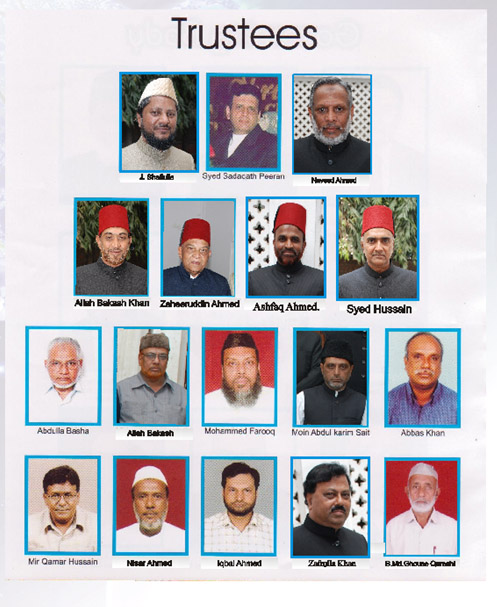

Home / About Us
Trustees
The Trustees of the Jamia Masjid & Muslim Charitable Fund Trust, as shown on the Trustees photograph.
Trustees
Names as shown in the Trustees image. The photograph is undated, so the list may no longer be current.
- Abbas Khan
- Naveed Ahmed
- Syed Sadaqath Peeran
- J. Shafiulla
- Moin Abdul Kareem
- Zaheeruddin Ahmed
- Mohammed Saifulla
- L. Mohamed Farooq
- Zafrulla Khan
- Allah Bakash Khan
- Ashfaq Ahmed
- Allah Bakash
- B. Md. Ghouse Qureshi
- Syed Hussain
- Mir Qamar Hussain
- Abdulla Basha
- Iqbal Ahmed

Earlier Trustees poster

See also the Governing Body.